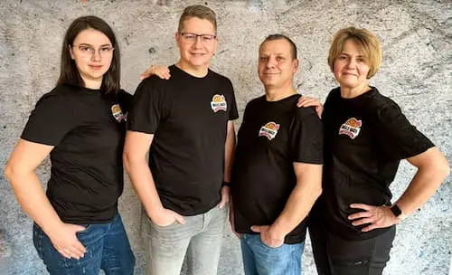
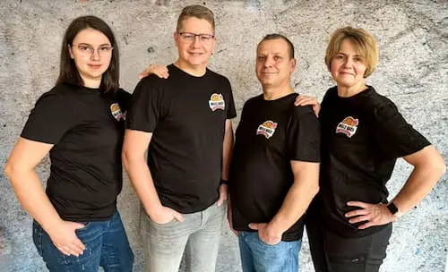
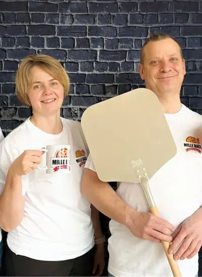
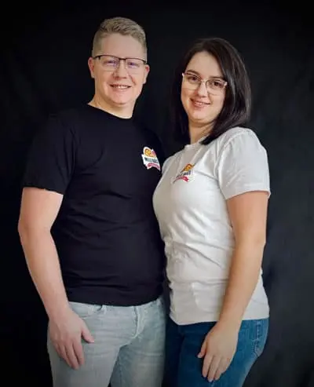

Über uns

 

Willkommen in unserer Pizzeria! Wir sind froh darauf, Ihnen authentische italienische Küche in gemütlicher Atmosphäre zu bieten. Unsere Leidenschaft für erstklassige Zutaten und traditionelle Zubereitungsmethoden spiegelt sich in jedem Bissen unserer handgefertigten Pizzen wider. Seit unserer Gründung haben wir es uns zum Ziel gesetzt, unsere Gäste mit exquisiten Geschmackserlebnissen zu verwöhnen und ein Stück Italien in das Herz von Deutschland zu bringen.

Unser Team besteht aus erfahrenen Pizzabäckern, die ihr Handwerk mit Hingabe und Können ausüben. Jede Pizza wird mit Liebe zum Detail zubereitet, von der Auswahl der frischen Zutaten bis hin zur perfekten Balance der Aromen. Wir legen großen Wert darauf, lokale und saisonale Produkte zu verwenden, um Ihnen stets die bestmögliche Qualität zu bieten. Ob klassische Margherita, herzhaft belegte Salami-Pizza oder kreative Variationen mit hausgemachten Saucen - bei uns finden Sie für jeden Geschmack das Passende.
Wir freuen uns darauf, Sie in unserer Pizzeria willkommen zu heißen und Ihnen eine unvergessliche kulinarische Erfahrung zu bieten. Ob Sie alleine kommen, mit Freunden feiern oder eine Familienfeier planen - bei uns sind Sie immer herzlich willkommen. Lassen Sie sich von unserem freundlichen Service und unserer köstlichen Pizza verwöhnen und genießen Sie eine Auszeit vom Alltag in unserem kleinen Stück Italien mitten in Deutschland.

Ruf uns jetzt an 07323 952448